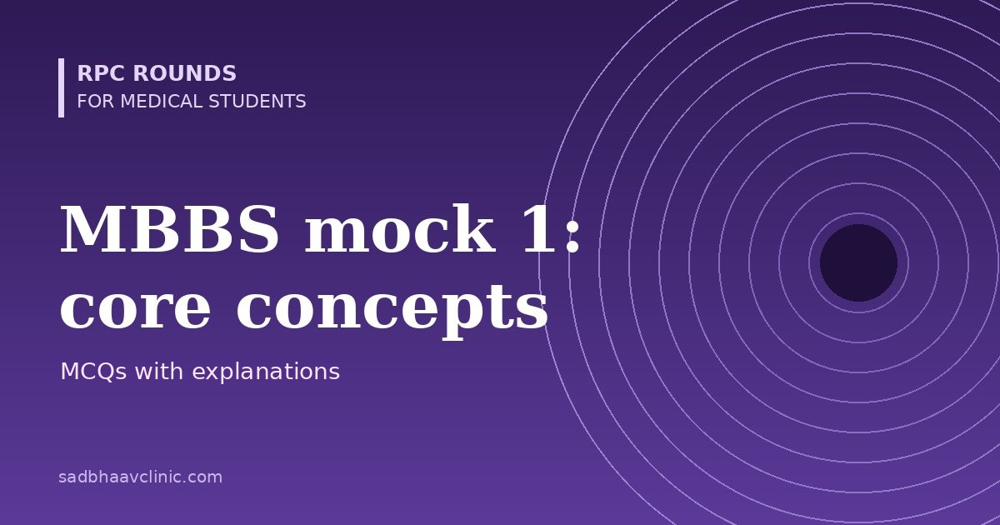

For: MBBS students
Last updated: November 2026
A 30-question mock on the core concepts every MBBS student must know, for the university theory paper and as a first step towards NEET-PG, INI-CET and FMGE.
Read the pages linked to the questions you got wrong and retake the test after a week. All student mocks: core concepts, clinical vignettes, practical exam, and the 50-question NEET-PG mock. Back to RPC Rounds for Medical Students.
More free mocks: all mock tests.
📘 Want more exam-ready material? See Most Commons in Ophthalmology on Kindle, or browse all my books.
How to cite this page
Patel D. MBBS Ophthalmology Mock Test 1: 30 Core MCQs for University Exams and NEET-PG. RPC Rounds (Sadbhaav Eye Clinic). Updated October 2026. Available at: https://www.sadbhaavclinic.com/mbbs-ophthalmology-mock-test-1.html. Accessed [date].
Looking for an eye specialist in Ahmedabad? Learn about our Eye Department or book a consultation with Dr. Dhaval Patel.